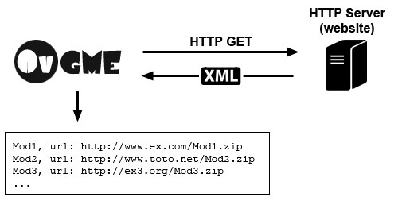

For OvGME, a repository is simply a web server (HTTP) who provides a specifically
structured XML data with informations about mod(s) to download. There are two things not
to be confused: The repository server, and where mod(s) are downloadable.
Repository transaction
The OvGME repository mechanism is pretty simple: A web server hosts an XML file
available as any other web page at a specific address, OvGME will query the HTTP server
to receive this specific file, then will parse it to gather data about what mods are
available and where they can be downloaded.

The repository server
The repository server must be a standard HTTP 1.1 server. This is, so to say, mainly
the only standard which is currently in service on the web. In other words, a repository
server is nothing other than a web site who provide an OvGME compatible XML file. The
only rules is that OvGME must be able to access this XML file through the web using a
specified URL.
To summarize: If you can open the XML file using your favorite web browser, OvGME will
too, and then, this is an "OvGME repository".
The standard URL to provide
If you provide a classical XML file in your server, the repository URL provided to users
must be the full URL to the XML file, with or without the ".xml" at the end of URL.
Indeed, if there is no ".xml" at the end of the URL, OvGME will automatically append
".xml" at the end of URL.
For example, if the full URL to XML file is:
"http://www.example.com:8080/repository/game1.xml"
The following URL is also valid for OvGME:
"http://www.example.com:8080/repository/game1"
OvGME supports all standard url format, with or without protocol or port specified.
Here are example of supported URL format:
http://www.example.com/folder/repository
www.example.com/folder/repository
www.example.com:8081/folder/repository
http://www.example.com:8081/folder/repository
Note: If not port is specified, the default HTTP port 80 is used.
Dynamically generated XML data
OvGME supports the chunked transfer-encoding method for simple HTTP GET request (not for
file download). In other words, OvGME can gather XML data from any dynamically
generated web page such as PHP or ASP page.
However, in this case, the provided repository URL must allow OvGME to recognize this is
not a raw XML repository (to not trying to add the ".xml" extension to URL).
To do so, the URL must either:
-
Be the full URL to the web file including ".php", ".asp" or ".aspx" extension.
-
Or containing a "?" character, typical of a dynamic URL request.
Here are some examples of valid provided URL for dynamically generated repository:
http://www.example.com/repository.php
http://www.example.com/repo.asp
http://www.example.com?game=1&type=2
Dynamically generated XML allow repositories managers to create their repositories using
real databases with their own XML source generator.